Introduction
Blue carbon is attracting massive attention from governments, investors, and companies needing carbon accounting practices. Mangrove forests can sequester almost ten times more than boreal, temperate, or tropical forests, thanks to the mangrove biological characteristics. That is one of the main reasons they received the nickname of “The Superheroes of Climate Change.”
Carbon stocks are the total amount of organic carbon stored within a system and are comprised of carbon pools, which fall into different bins: living aboveground living (live plants, including epiphytes); dead aboveground biomass (e.g., fallen branches); living belowground biomass (e.g., roots); and belowground carbon (sediment organic matter).
With that in mind, it is critical to understand the main factors to calculate the total mangrove carbon stocks’ in restoration practices. Additionally, to analyze and calculate an appropriate amount of tree samples and plot sizes to estimate the amount of carbon storage in the area.
Is there existing evidence for this question? If so, why is it inconclusive?
Blue carbon accounting is a new strategy with few practical examples and evidence worldwide. Some methodologies align with the Verra non-profit organization VCS (Verified Carbon Standard) that helps us describe and outline the correct procedures to quantify the net greenhouse gas emission reductions and removals resulting from project activities implemented to restore tidal wetlands. For this case, the provided data uses equations and formulas designed on the VCS0032 and VCS0033 methodologies, which are aligned with the VCS.
Data
The data are real field measurements from mangrove tree´s over 4 different replantation sites (2010, 2016, 2017, 2020). This data was provided directly to me by Silvestrum Climate Associates ®. This data is confidential and there is limited access to the site.
Limitations, spatial and temporal features.
The dataset has a measurement record for each tree´s height and canopy.With those measurements, Silvestrum has calculated the total tree carbon in (kg) and the total tree carbon per hectare in (Mg/ha). In this analysis, we will assume that the correct protocols and equations were followed for this purpose, and this analysis is dependent from those results.
Regarding the dataset, the above and below ground carbon storage was assessed using a nested sub-sampling protocol along the 25m2, 77m2, and 154m2 transect following the Kauffman and Donato procedure. The equations for above and below ground biomass are defined by Comley and McGuiness.
The mathematically calculations made my the owner of this dataset is a limitation, as we do not have actual carbon samples to analyze. Another limitation is the possible man errors from the field sampling and the natural growth and variability from the mangroves.
To get you familiarized, the table below shows the first 5 rows of the data which this post will be studying. It has a total of 10,826 rows and 11 columns.
| plantation_year | plot | height_cm | canopy_width_1_cm | canopy_width_2_cm | crown_area_m2 | cd_chatting_m | chatting_agb_kg | chatting_agb_mg_ha | comley_mc_guinness_planted_bgb_kg | comley_mc_guinness_planted_bgb_mg_ha | total_tree_kg | total_tree_mg_ha | chatting_agc_kg_c | chatting_agc_mg_c_ha | comley_mc_guinness_planted_bgc_kg_c | comley_mc_guinness_planted_bgc_mg_c_ha | total_tree_kg_c | total_tree_mg_c_ha | plot_size_m2 |
|---|---|---|---|---|---|---|---|---|---|---|---|---|---|---|---|---|---|---|---|
| 2017 | 8 | 112 | 59 | 57 | 0.264 | 0.58 | 0.494 | 0.032 | 0.456 | 0.030 | 0.950 | 0.062 | 0.237 | 0.015 | 0.178 | 0.012 | 0.415 | 0.027 | 153.938 |
| 2017 | 2_new | 280 | 90 | 101 | 0.716 | 0.96 | 1.436 | 0.571 | 1.326 | 0.527 | 2.762 | 1.099 | 0.689 | 0.274 | 0.517 | 0.206 | 1.206 | 0.480 | 25.133 |
| 2017 | 2_new | 275 | 114 | 119 | 1.066 | 1.17 | 2.198 | 0.874 | 2.028 | 0.807 | 4.226 | 1.681 | 1.055 | 0.420 | 0.791 | 0.315 | 1.846 | 0.734 | 25.133 |
| 2017 | 2_new | 274 | 95 | 102 | 0.762 | 0.99 | 1.534 | 0.611 | 1.416 | 0.564 | 2.951 | 1.174 | 0.737 | 0.293 | 0.552 | 0.220 | 1.289 | 0.513 | 25.133 |
| 2017 | 2_new | 264 | 133 | 104 | 1.103 | 1.19 | 2.279 | 0.907 | 2.104 | 0.837 | 4.383 | 1.744 | 1.094 | 0.435 | 0.820 | 0.326 | 1.914 | 0.762 | 25.133 |
| 2017 | 2_new | 264 | 133 | 104 | 1.103 | 1.19 | 2.279 | 0.907 | 2.104 | 0.837 | 4.383 | 1.744 | 1.094 | 0.435 | 0.820 | 0.326 | 1.914 | 0.762 | 25.133 |
| plantation_year | Plot Count | Sample Count | Total Carbon (mg/ha) | Total Carbon Variance (mg/ha) |
|---|---|---|---|---|
| 2010 | 7 | 746 | 45.725 | 0.1072349 |
| 2017 | 27 | 4126 | 242.993 | 0.1302739 |
| 2019 | 8 | 998 | 22.994 | 0.0185163 |
| 2020 | 46 | 4956 | 87.824 | 0.0159968 |
As we can see in the table above, the 2017 plantation year has an exciting number of samples, different sample plot sizes, and high variation of total carbon in mg per hectare. We will focus on this year to answer our questions.
The table #3 contains only information from the 2017 plantation year. We will use this filter to analyse the different questions, and interpret our results.
Show code
mangrove_2017 <- mangrove_df |>
filter(plantation_year == 2017) |>
select(height_cm,plot, plot_size_m2, cd_chatting_m,total_tree_kg_c,total_tree_mg_c_ha)
mangrove_2017 <- mangrove_2017[!(mangrove_2017$total_tree_mg_c_ha== 1.224),]
#Statistical Table with the selected variables for question #1
mangrove_plots_2017 <- mangrove_2017 |>
group_by(plot_size_m2) |>
summarise(tot_samples = n(),
tot_plot_count = length(unique(plot)),
mean_tree_c_ha = mean(total_tree_mg_c_ha),
sd_tree_c_ha = sd(total_tree_mg_c_ha)) |>
mutate(plot_size_m2 = c("25m2", "77m2", "154m2"))
mangrove_plots_2017 %>%
kbl(align=rep('c', 5),
caption ="Table 3. Plot summary of the 2017 plantation year",
position = "left") %>%
kable_paper("hover", full_width = F)| plot_size_m2 | tot_samples | tot_plot_count | mean_tree_c_ha | sd_tree_c_ha |
|---|---|---|---|---|
| 25m2 | 323 | 4 | 0.3708173 | 0.3035103 |
| 77m2 | 336 | 5 | 0.0624196 | 0.0651300 |
| 154m2 | 3466 | 18 | 0.0291466 | 0.0297558 |
Show code
#Statistical table of each unique plot to analyse variability in the question #2
plots_2017 <- mangrove_2017 |>
group_by(plot, plot_size_m2) |>
summarise(sample_count = n(),
mean_tree_c = mean(total_tree_kg_c),
mean_carbon_mg_ha = mean(total_tree_mg_c_ha),
sd_tree_c = sd(total_tree_kg_c),
sd_tree_c_ha = sd(total_tree_mg_c_ha))Now let us take a look at the effect of sample plot size and the total tree carbon (Mg/ha).
Show code
#Boxplot
mangrove_2017 |>
ggplot(aes(x=plot_size_m2, y = total_tree_mg_c_ha,color = plot_size_m2)) +
geom_boxplot() +
labs(title = "Tree Carbon vs Plot Type",
subititle = "Plantation Year - 2017",
x = "Plot Size (m2)",
y = "Total Tree Carbon (Mg/ha)") +
scale_color_brewer(palette = "Dark2") 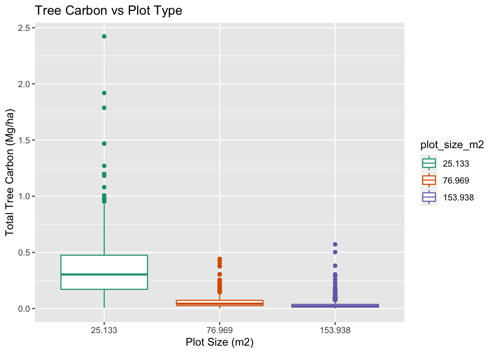
Question 1
The graph above shows a visual difference in carbon means between the 25m2 sample plot and the other two sample plots. So let us analyze the relationship between the 77m2 and the 154m2, with a hypothesis test and see if the means in the total carbon per tree (Mg/ha) are different. Why this two? Because visually they look more similar and the seems to be the outlier 25m2.
Analysis: Hypothesis Testing between 77m2 vs 154m2
The Null Hypothesis - The Total Carbon per Tree (mg/ha) mean in the Sample Size of 77m2 is no different from the 154m2.
\[H_0: \mu_{77m2} - \mu_{154m2} = 0\]
Alternative Hypothesis- The Total Carbon per Tree (mg/ha) in the sample size of 77m2 is different from the one the 154m2.
\[H_0: \mu_{77m2} - \mu_{154m2} \neq 0\]
Calculate the Point Estimate and the Standard Error
\[SE = \sqrt{\frac{s_1^2}{n_1} + \frac{s^2_2}{n_2}}\]
Show code
#Calculate Point Estimate
point_est_2 = (mangrove_plots_2017$mean_tree_c_ha[2] - mangrove_plots_2017$mean_tree_c_ha[3])
#Define the Standard Error
n_77m = mangrove_plots_2017$tot_samples[2]
s_77m = mangrove_plots_2017$sd_tree_c_ha[2]
n_154m = mangrove_plots_2017$tot_samples[3]
s_154m = mangrove_plots_2017$sd_tree_c_ha[3]
print(paste("Point Estimate:", round(point_est_2,5)))[1] "Point Estimate: 0.03327"Show code
SE_2 = as.numeric(sqrt(s_77m^2/n_77m + s_154m^2/n_154m))
print(paste("Standard Error:", round(SE_2,5)))[1] "Standard Error: 0.00359"Calculate the Z-Score \[z_{score}=\frac{\text { point estimate }-\text { null value }}{S E}\]
Show code
z_score_2 <- (point_est_2 - 0) / SE_2
z_score_2[1] 9.271106The Z-Score will tell us that the the observed difference between a sample plot of 77m2 and 154m2 is 9.3 standard deviations above our null hypothesis of “zero difference” of our dependent variable in Tree Carbon (Mg/ha).
Calculate the p-value and run a t - test
Show code
option2_ttest <- t.test(mangrove_2017$total_tree_mg_c_ha[mangrove_2017$plot_size_m2 == 76.969], mangrove_2017$total_tree_mg_c_ha[mangrove_2017$plot_size_m2 == 153.938])
option2_ttest
Welch Two Sample t-test
data: mangrove_2017$total_tree_mg_c_ha[mangrove_2017$plot_size_m2 == 76.969] and mangrove_2017$total_tree_mg_c_ha[mangrove_2017$plot_size_m2 == 153.938]
t = 9.2711, df = 348.68, p-value < 2.2e-16
alternative hypothesis: true difference in means is not equal to 0
95 percent confidence interval:
0.02621446 0.04033169
sample estimates:
mean of x mean of y
0.06241964 0.02914657 Results:
With this results we can reject the null as the p-value is very small, meaning there is a significant difference between the means on carbon storage in each tree per hectare between the sample plot size of 77m2 to the sample size of 154m2.
We are 95% confident that the true value of the difference in tree carbon across the two plot sizes lies between 0.0262 - 0.0403 mg per hectare.
This graph summarizes all the important take away.
Show code
crit_val_2 = qnorm(0.025, lower.tail = F)
ci_lower_2 = round(point_est_2 - crit_val_2*SE_2, 3)
ci_upper_2 = round(point_est_2 + crit_val_2*SE_2, 2)
mangrove_2017 |>
filter(plot_size_m2 %in% c(76.969, 153.938)) |>
ggplot(aes(x=plot_size_m2, y = total_tree_mg_c_ha,color = plot_size_m2)) +
geom_point(alpha = 0.5) +
stat_summary(fun= "mean", aes(shape= "mean"),color = "darkblue", geom = "pointrange",size = 1.5) +
labs(title = "Tree mg C vs Plot Type",
x = "Plot Size",
y = "Total Tree Carbon (Mg/ha)") +
scale_color_brewer(palette = "Dark2") +
geom_hline(aes(yintercept = 0.026, linetype = "Lower CI"), color = "gray50", size = .5) +
geom_hline(aes(yintercept = 0.04, linetype = "Upper CI"), color = "gray10", size = .5) +
scale_shape_manual("", values= c("mean" = "+")) +
scale_linetype_manual(name = "Confidence Intervals", values = c(2, 2),
guide = guide_legend(override.aes = list(color = c("gray50", "gray10"))))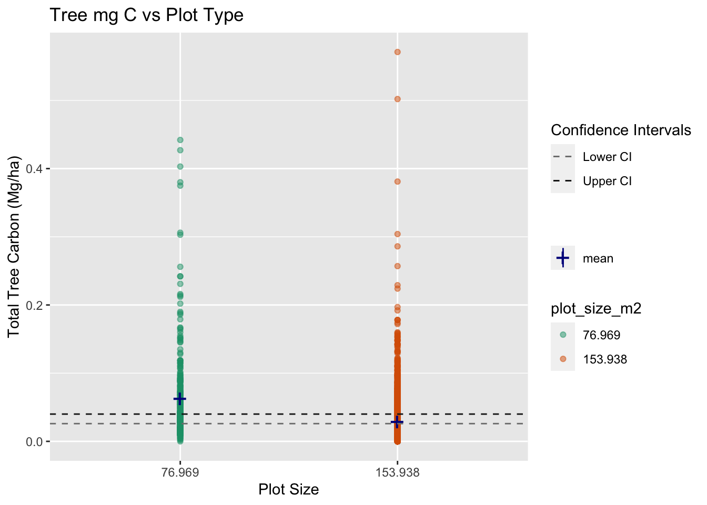
Important take away from Question 1
As we can see in the graph, both means are close to each other, but they are statistically significantly different. With this data analysis and results, we can help the actual client better understand their plot sampling sizes, concluding that smaller plot sizes are getting a larger carbon estimate.
Question 2:
Let analyze why the smaller plot is getting a larger estimate of total carbon per hectare.
For this purpose, we will create a new table and graph to easily visualize what the density per plot type (Number of trees per m2) is
Show code
#Changing the column to numeric
mangrove_df$plot_size_m2_num <- as.numeric(mangrove_df$plot_size_m2)
density_df <- read_csv("/Users/javipatron/Documents/MEDS/Courses/eds222/homework/eds222-finalproject/data/clean_monitoring_data_javier.csv") |>
clean_names() |>
filter(plantation_year == 2017) |>
select(height_cm,plot, plot_size_m2, cd_chatting_m,total_tree_kg_c,total_tree_mg_c_ha) |>
group_by(plot, plot_size_m2) |>
summarise(sample_count = n(),
mean_hight = mean(height_cm),
mean_tree_c = mean(total_tree_kg_c),
mean_carbon_mg_ha = mean(total_tree_mg_c_ha),
sd_tree_c = sd(total_tree_kg_c),
sd_tree_c_ha = sd(total_tree_mg_c_ha)) |>
mutate(density = sample_count/plot_size_m2)
head(density_df) %>%
kbl(align=rep('c', 5),
caption ="Table 4. Density Table per Plot",
position = "left") %>%
kable_paper("hover", full_width = F) %>%
kable_styling(position = "left")| plot | plot_size_m2 | sample_count | mean_hight | mean_tree_c | mean_carbon_mg_ha | sd_tree_c | sd_tree_c_ha | density |
|---|---|---|---|---|---|---|---|---|
| 1_new | 25.133 | 95 | 154.35789 | 0.8619895 | 0.3429368 | 0.9612535 | 0.3824683 | 3.779891 |
| 12 | 153.938 | 298 | 96.80872 | 0.3211477 | 0.0208591 | 0.2032983 | 0.0132004 | 1.935844 |
| 13 | 153.938 | 183 | 84.13115 | 0.3955847 | 0.0257268 | 0.2680318 | 0.0174041 | 1.188790 |
| 14 | 153.938 | 160 | 108.31875 | 0.5805625 | 0.0377312 | 0.3058017 | 0.0198459 | 1.039379 |
| 16 | 153.938 | 288 | 107.60069 | 0.3394236 | 0.0220590 | 0.3061588 | 0.0198987 | 1.870883 |
| 17 | 153.938 | 223 | 105.67265 | 0.3120404 | 0.0202825 | 0.2867950 | 0.0186237 | 1.448635 |
Show code
ggplot(density_df, aes(x= as.factor(plot_size_m2), y= density, fill = as.factor(plot_size_m2))) +
geom_boxplot(alpha = 0.7) +
labs(title = "Density of trees per plot size",
x= "Plot Size (m2)",
y = "Density (Tree/m2)",
col = "Plot Size (m2)") +
scale_fill_discrete(name = "Plot Type")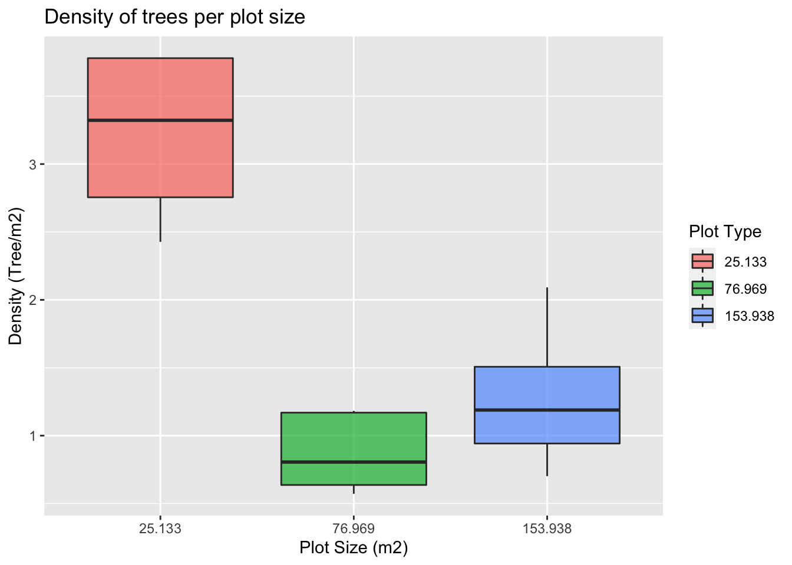
As we can see in this graph, the plot sizes significantly differ in density (Number of trees per m2). Plots of 25 m2 have a density of 3.2 trees per m2, and plots of 77 m2 have a density of 0.873 trees per m2. To avoid possible bias, this is a point to highlight for future projects.
Now, to visually show the effect of plot sizes on the total carbon per tree, let us take a deeper look at these two histograms.
This Histogram shows how much variance we have between our plots.
Show code
ggplot(plots_2017, aes(x=sd_tree_c_ha)) +
geom_histogram(aes(y = stat(density)), color = "gray20", fill = "darkolivegreen", alpha = 0.7) +
geom_density(col = "gray30", alpha = 0.15, fill = "green") +
labs(title = "Total Carbon per Tree (mg/ha)",
subtitle = "All Plots",
x = "Tree Carbon Variance (mg/ha)",
y = "Denisity Plots")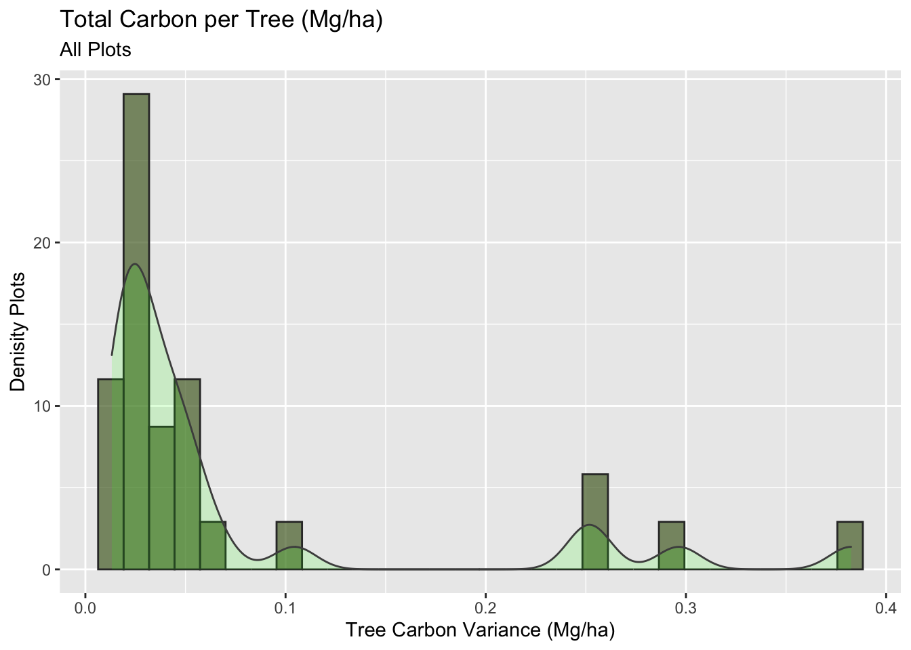
We have a skew right histogram with a long tail. Now let us analyze this same plot, but separating per plot type, to see who is responsible for those outliers.
Show code
plots_2017 |>
filter(plot_size_m2 %in% c(25.133, 76.969, 153.938)) |>
ggplot(aes(x=sd_tree_c_ha)) +
geom_histogram(aes(y = stat(density), fill = plot_size_m2),color = "gray30", alpha = 0.3) +
geom_density(aes(fill = plot_size_m2), col = "gray30", alpha = 0.8) +
labs(title = "Total Carbon per Tree (mg/ha)",
subtitle = "Per Plot",
x = "Tree Cabron Variance (mg/ha)",
y = "Density Plots")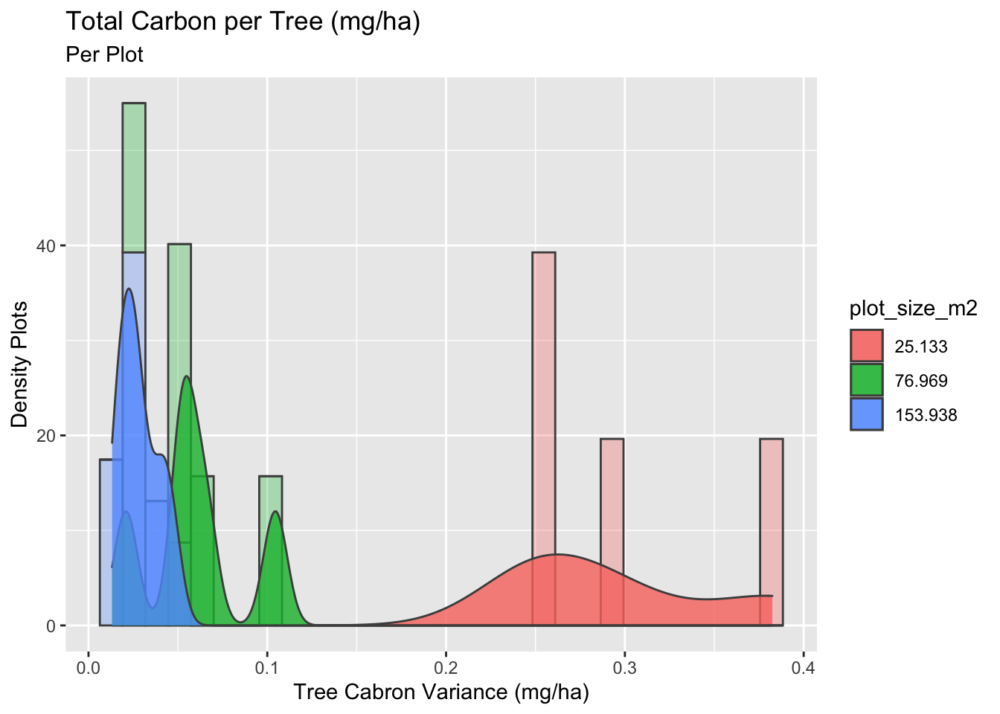
Show code
#Total Tree Carbon (mg/ha)
# Just the 25m2
mangrove_2017 |>
filter(plot_size_m2 == 25.133) |>
ggplot(aes(x=total_tree_mg_c_ha)) +
geom_histogram(aes(y = stat(density)), fill = "red", color = "gray30", alpha = 0.6) +
geom_density(col = "gray30", alpha = 0.3, fill = "gray10") +
labs(title = "Total Carbon per Tree (mg/ha)",
subtitle = "25m2")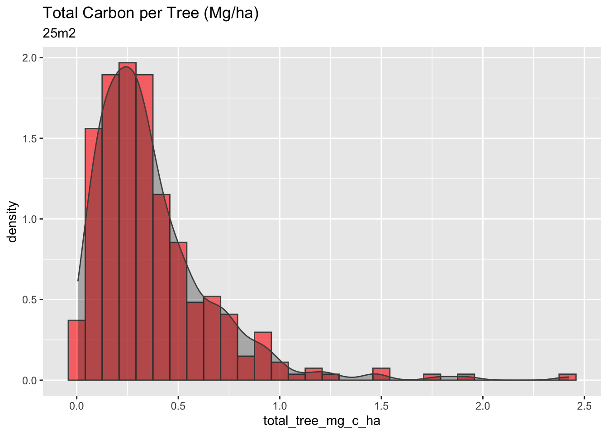
Show code
#Total Tree Carbon (mg/ha)
# Just the 77m2
mangrove_2017 |>
filter(plot_size_m2 == 76.969) |>
ggplot(aes(x=total_tree_mg_c_ha)) +
geom_histogram(aes(y = stat(density)), fill = "lightgreen", color = "gray30") +
geom_density(col = "gray30", alpha = 0.5, fill = "gray10") +
labs(title = "Total Carbon per Tree (mg/ha)",
subtitle = "77m2")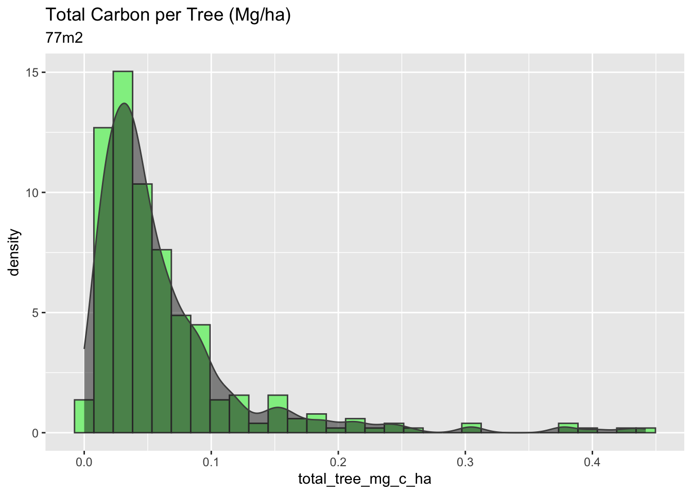
Show code
#Total Tree Carbon (mg/ha)
# Just the 154m2
mangrove_2017 |>
filter(plot_size_m2 == 153.938) |>
ggplot(aes(x=total_tree_mg_c_ha)) +
geom_histogram(aes(y = stat(density)), fill = "lightblue", color = "gray30") +
geom_density(col = "gray30", alpha = 0.5, fill = "gray10") +
labs(title = "Total Carbon per Tree (mg/ha)",
subtitle = "154m2")
Important take away from Question 2:
The 25m2 plots have the highest carbon per hectare, a higher density of trees per m2, and a higher variance in their calculations. Overall, the plot of 25m2 has a more considerable amount of carbon stock per hectare, however, with high variability, which is not very confident for the methodologies and the Verified Carbon Standard protocols.
An important take away to ask and further analyse with Silvestrum, is why the 25m2 samples are having the highest trees records and the highest tree density in comparison to the 77m2 and 154m2.
Question 3:
As we can see a significant effect of sample plot size in the calculated Total Carbon per Tree, it would be helpful to put our shoes in the field, and estimate an appropriate sample size to determine the amount of carbon storage in this same area.
First, does a larger number of samples decrease the variance in our calculations?
Show code
ggplot(plots_2017, aes(x= sample_count, y = sd_tree_c_ha)) +
geom_point(aes(color = plot_size_m2)) +
geom_smooth(method = lm,
color = "cyan4",
se = F) +
labs(title = "Tree Carbon variance per Sample plot",
x = "Number of samples per Plot",
y = "Variance of Carbon in each plot")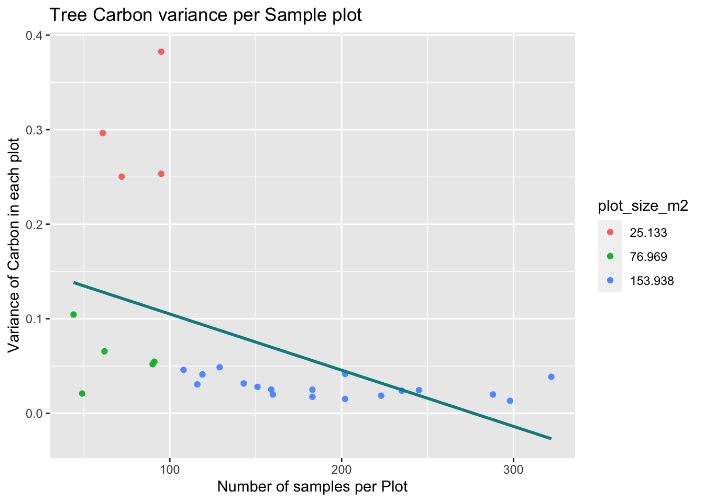
This graph shows that a larger number of samples decrease the variance in our calculations. But is there a way we can define our “sweet spot” of sample sizes? In the case of the 154m2 the 3,466 did lower the variance, but it sounds like a lot of work!.
Secondly, to correctly create a statistical approach, define an “ideal” sample count, and help guide sample sizes in future projects. We will use this data, and the pwr() package to estimate the number of samples needed to obtain a high power of confidentiality. In other words, depending on the means overlaps for each plot size, we will need more or less samples to get the 95% confidence that we are looking for.
First, we need to understand and visualize the overlaps that we currently have between our sample plots.
Show code
#Total Tree Carbon (mg/ha)
mangrove_2017 |>
filter(plot_size_m2 %in% c(25.133, 76.969, 153.938)) |>
ggplot(aes(x=total_tree_mg_c_ha)) +
geom_histogram(aes(y = stat(density), fill = plot_size_m2),color = "gray30", alpha = 0.3) +
geom_density(aes(fill = plot_size_m2), col = "gray30", alpha = 0.8) +
labs(title = "Histogram of Carbon per Tree (Mg/ha)",
subtitle = "2017")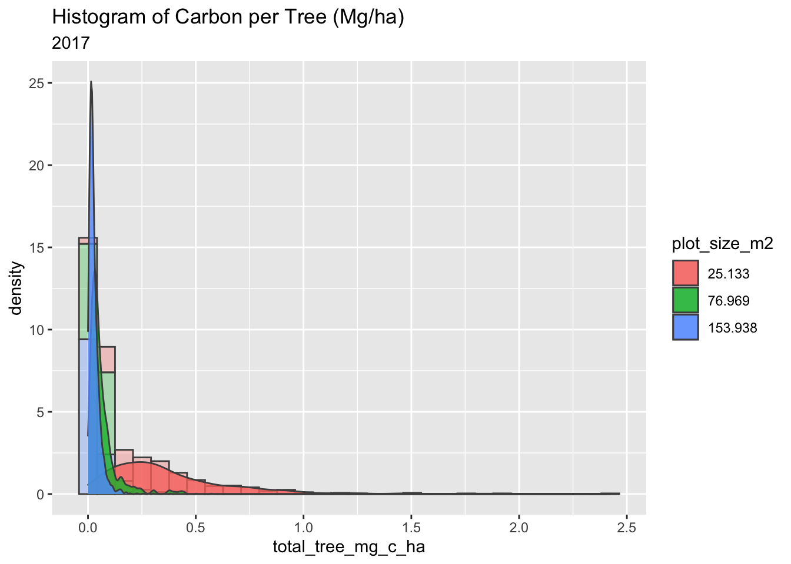
The histogram above shows the density between all tree measurements per plot size. The important part is to see the overlap between the sample types to calculate the power.
Another way to visualize this distribution of a single continuous variable of total tree carbon (Mg/ha) is by dividing the plot sizes into bins and using the frequency polygons geom_freqpoly()` function to display the counts with lines. Frequency polygons are more suitable when you want to compare the distribution across the levels of a categorical variable.
Show code
#Plotting just the lines
ggplot(mangrove_2017, aes(x=total_tree_mg_c_ha, color = plot_size_m2)) +
geom_freqpoly(aes(y = stat(density))) +
labs(title = "Frequency Polygon",
subtitle = "Invisible Histogram to see overlaps between Sample Size",
x = "Total Carbon per Tree (mg/ha)",
y = "Density")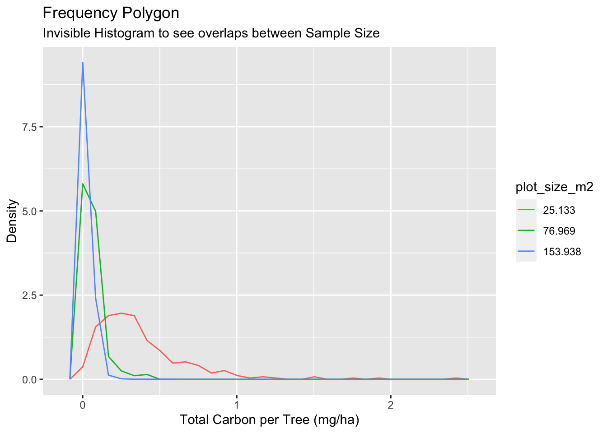
Thanks to the Frequency polygon graph, we can see clearly the overlap between 77m2 and 154m2 plot types, which are way more correlated than the overlap with 25m2.
Thirdly, we will use the pwr.t.test function to estimate the number of counts we need from each sample plot to have a power of 90%.
Show code
# Create the objects with the sd of each group
sd_25m = mangrove_plots_2017[[1,5]]
sd_77m = mangrove_plots_2017[[2,5]]
sd_154m = mangrove_plots_2017[[3,5]]
mean_25m = mangrove_plots_2017[[1,4]]
mean_77m = mangrove_plots_2017[[2,4]]
mean_154m = mangrove_plots_2017[[3,4]]A) Power between 25m2 and 154m2.
Show code
mean_difference_a = mean_25m - mean_154m
d25_154 = as.numeric(sqrt(sd_25m^2/2 + sd_154m^2/2))
effect_size_a = mean_difference_a / d25_154
power_test_1 <- pwr.t.test(d = round(effect_size_a,2),
power = 0.95,
sig.level = 0.05,
type="two.sample",
alternative="two.sided")
print(power_test_1)
Two-sample t test power calculation
n = 11.46789
d = 1.58
sig.level = 0.05
power = 0.95
alternative = two.sided
NOTE: n is number in *each* groupBecause the means between 25m2 and 154m2 are so different, we will only need twelve samples to have a power of 95%.
B) Power between 77m2 and 154m2
Show code
mean_difference_b = mean_77m - mean_154m
d77_154 = as.numeric(sqrt(sd_77m^2/2 + sd_154m^2/2))
effect_size_b = mean_difference_b / d77_154
power_test_2 <- pwr.t.test(d = round(effect_size_b,2),
power = 0.95,
sig.level = 0.05,
type="two.sample",
alternative="two.sided")
print(power_test_2)
Two-sample t test power calculation
n = 60.64108
d = 0.66
sig.level = 0.05
power = 0.95
alternative = two.sided
NOTE: n is number in *each* groupShow code
plot(power_test_2)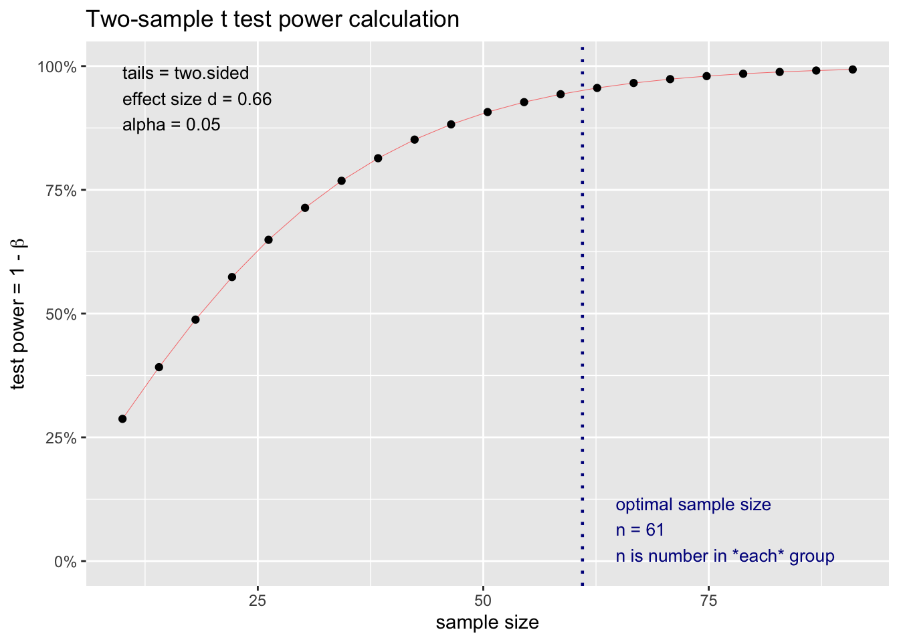
In this case, as the means between 77m2 and 154m2 are closer together, we can estimate that with Sixty samples, we could have a power of 95%.
Conclusion
Further research needs to be conducted with other mangrove reforestation sites to increase our confidentiality regarding the correct selection of plot sizes and tree measurements.
In order to increase our probabilities and reduce possible bias for future projects, its important to follow the VCS methodologies regarding uncertainty. A random stratified sampling could be a better approach than measuring every single tree in the reforestation. Nevertheless, this study supports the efforts put in place with the 77m2 and 154m2 sample plots as they show a general low variance in their calculations, and a significant lower amount of total measurement specially for the 77m2 plot, saving valuable time in the field. Assuming that all calculation are right in the initial provided data, this study successfully supports the initial question of what is an “ideal” number of samples to reduce extra effort, and still be certain of your estimates (see results of Question 3).
Overall, Mangrove forests are an incredible biological ecosystem; this type of small analysis and efforts definitely help the nature-based solutions get closer to unimaginable changes in future projects. As this analysis has proved there are some questions being answered, but there are still some other important opportunities to be discovered regarding the structure of sampling according to the methodologies, which they seem to be the key factor for certain results.
PS. Thanks Silvestrum Climate Associates for sharing this collection of data samples data from one of your real reforestation sites.
References
Verraadmin (2020) First Blue Carbon Conservation Methodology expected to scale up finance for Coastal Restoration & Conservation Activities, Verra. Available at: https://verra.org/first-blue-carbon-conservation-methodology-expected-to-scale-up-finance-for-coastal-restoration-conservation-activities (Accessed: December 8, 2022).
VM0033 methodology for tidal wetland and Seagrass Restoration, v2.0 (2022) Verra. Available at: https://verra.org/methodologies/vm0033-methodology-for-tidal-wetland-and-seagrass-restoration-v2-0/ (Accessed: December 8, 2022).
VM0032 methodology for the adoption of sustainable grasslands through adjustment of fire and grazing, v1.0 (2022) Verra. Available at: https://verra.org/methodologies/vm0032-methodology-for-the-adoption-of-sustainable-grasslands-through-adjustment-of-fire-and-grazing-v1-0/ (Accessed: December 8, 2022).
McGuinness, K. (2005) Above- and below-ground biomass, and allometry, of four common northern ..., Research Gate. Available at: https://www.researchgate.net/publication/248899546_Above-_and_below-ground_biomass_and_allometry_of_four_common_northern_Australian_mangroves (Accessed: December 9, 2022).
Kauffman, and Donato, (2012) Center for International Forestry Research - CIFOR, Cifor. Available at: https://www.cifor.org/publications/pdf_files/WPapers/WP86CIFOR.pdf (Accessed: December 9, 2022).
Center for International Forestry Research - CIFOR (no date). Available at: https://www.cifor.org/publications/pdf_files/WPapers/WP86CIFOR.pdf (Accessed: December 9, 2022).
The more you know: Mangroves (2020) Ripley’s Aquarium of Canada. Available at: https://www.ripleyaquariums.com/canada/the-more-you-know-mangroves/ (Accessed: December 8, 2022).
Supporting Figures
Test the power results with random samples
Here, we have created a power table with the means and SD of your random table and run a power analysis with the selected random samples to test my results
Test your results 25m2 vs 154m2 by changing the number of samples!
Show code
samples = 12
random_table_test <- mangrove_2017 |>
group_by(plot_size_m2) |>
slice_sample(n = samples)
power_table_test <- random_table_test |>
group_by(plot_size_m2) |>
summarise(tot_samples = n(),
tot_plot_count = length(unique(plot)),
mean_tree_c_ha_mg = mean(total_tree_mg_c_ha),
sd_tree_c_ha_mg = sd(total_tree_mg_c_ha)) |>
mutate(plot_size_m2 = c("25m2", "77m2", "154m2"))
random_mean_25m = power_table_test[[1,4]]
random_mean_154m = power_table_test[[3,4]]
random_sd_25m = power_table_test[[1,5]]
random_sd_154m = power_table_test[[3,5]]
#Using all the samples
#Real Difference
random_effect_size_a = (random_mean_25m - random_mean_154m) / (as.numeric(sqrt(random_sd_25m^2/2 + random_sd_154m^2/2)))
print(effect_size_a)[1] 1.584427Show code
print(random_effect_size_a)[1] 1.341527Show code
ggplot(random_table_test, aes(x= plot_size_m2, y = total_tree_mg_c_ha, col = plot_size_m2)) +
geom_point() +
geom_hline(aes(yintercept = mean_difference_a,
linetype = "real"),
color = "gray50",
size = .5) +
geom_hline(aes(yintercept = (random_mean_25m - random_mean_154m),
linetype = "random"),
color = "gray10",
size = .5) +
scale_shape_manual("", values= c("mean" = "+")) +
scale_linetype_manual(name = "Means difference",
values = c(2, 2),
guide = guide_legend(
override.aes = list(
color = c("gray50", "gray10")))) +
labs(title = "Total Cabron per Tree (mg/ha)",
subtitle = "Random sample size",
x = "Plot Type",
y = "Total Tree Carbon (mg/ha)",
caption = paste("Difference between the real sample means is:",round(mean_difference_a,2),"(mg/ha)" ,"\nDifference between the randomly relected samples mean is:", round((random_mean_25m - random_mean_154m),2), "(mg/ha)"))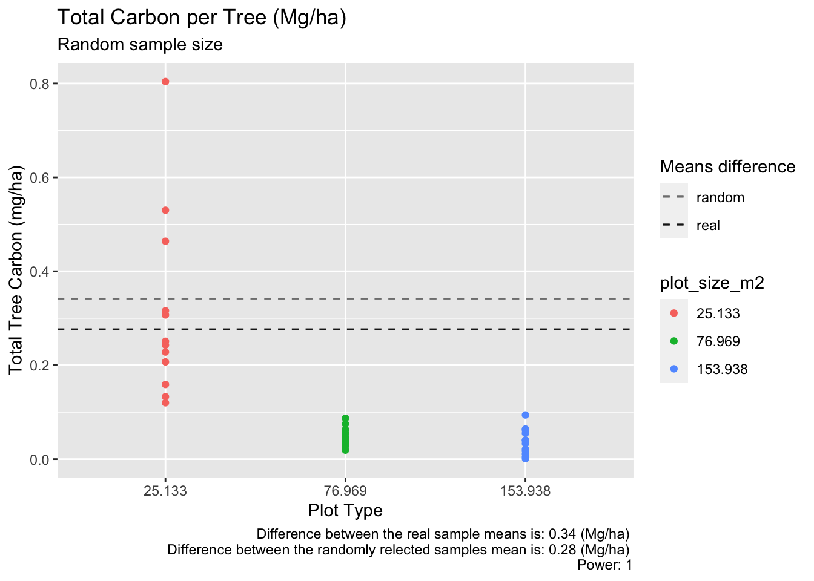
Test your results 77m2 vs 154m2 with 50 samples
Show code
samples = 60
random_table_test <- mangrove_2017 |>
group_by(plot_size_m2) |>
slice_sample(n = samples)
power_table_test <- random_table_test |>
group_by(plot_size_m2) |>
summarise(tot_samples = n(),
tot_plot_count = length(unique(plot)),
mean_tree_c_ha_mg = mean(total_tree_mg_c_ha),
sd_tree_c_ha_mg = sd(total_tree_mg_c_ha)) |>
mutate(plot_size_m2 = c("25m2", "77m2", "154m2"))
random_mean_77m = power_table_test[[2,4]]
random_mean_154m = power_table_test[[3,4]]
random_sd_77m = power_table_test[[2,5]]
random_sd_154m = power_table_test[[3,5]]
#Using all the samples
#Real Difference
random_effect_size_b = (random_mean_77m - random_mean_154m) / (as.numeric(sqrt(random_sd_77m^2/2 + random_sd_154m^2/2)))
print(effect_size_b)[1] 0.6571471Show code
print(random_effect_size_b)[1] 0.8720162Show code
ggplot(random_table_test, aes(x= plot_size_m2, y = total_tree_mg_c_ha, col = plot_size_m2)) +
geom_point() +
geom_hline(aes(yintercept = effect_size_b,
linetype = "real"),
color = "gray50",
size = .5) +
geom_hline(aes(yintercept = random_effect_size_b,
linetype = "random"),
color = "gray10",
size = .5) +
scale_shape_manual("", values= c("mean" = "+")) +
scale_linetype_manual(name = "Means Difference",
values = c(2, 2),
guide = guide_legend(
override.aes = list(
color = c("gray50", "gray10")))) +
labs(title = "Total Cabron per Tree (mg/ha)",
subtitle = "Random sample size",
x = "Plot Type",
y = "Total Tree Carbon (mg/ha)",
caption = paste("Difference between the real sample means is:",round(mean_difference_b,2),"(mg/ha)" ,"\nDifference between the randomly relected samples mean is:", round((random_mean_77m - random_mean_154m),2), "(mg/ha)"))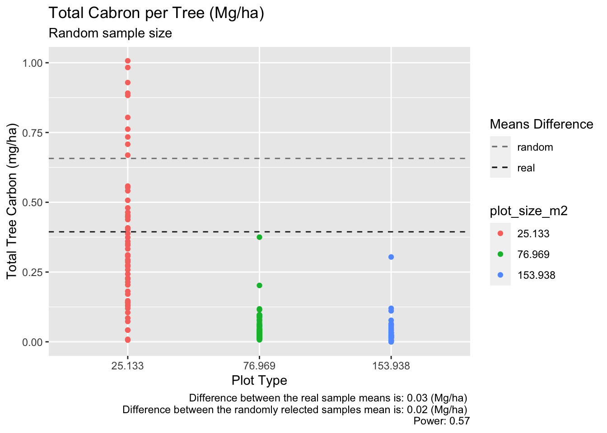
Citation
@online{patrón,
author = {Javier Patrón},
title = {An {Statistical} {Mangrove} {Analysis} {Post}},
date = {},
url = {https://github.com/javipatron},
langid = {en}
}